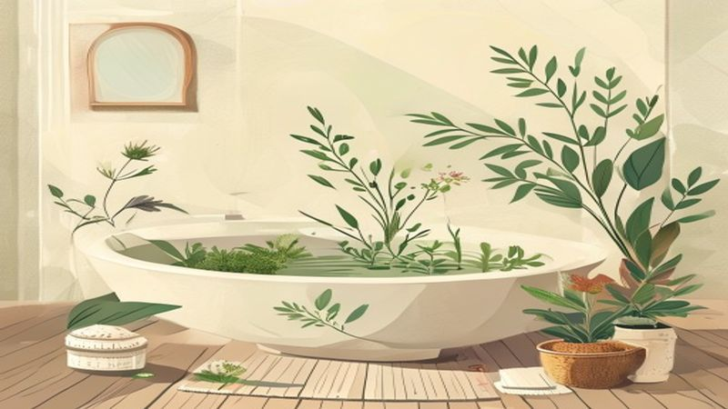

「わたしに戻る」夜の養生。生薬のちからで身体を芯から温める、極上のセルフケア習慣
2026.05.02

「おかえりなさい」。今日一日を駆け抜けたあなたへ、そんな言葉をかけたくなるような夜があります。仕事、家事、人間関係。目まぐるしく変化する日常の中で、私たちの心と体は、自分が思っている以上に「外側」の刺激に晒されています。
ふと鏡を見たとき、肩に力が入っていたり、顔色が少し曇っていたりすることはありませんか？そんなときは、ほんの少しだけ立ち止まって、自分自身を慈しむ時間が必要です。セルフケアブランド「fucuu（フクウ）」が大切にしているのは、植物のちからを借りて、本来の「わたしに戻る」ひとときを過ごすこと。
今回は、古くから伝わる「養生」の考え方を取り入れた、生薬入浴剤による温活習慣についてお話しします。じんわりと身体を解きほぐし、明日への幸福感（フクフク）を蓄えるためのヒントをお届けします。

1. なぜ「冷え」は心までこわばらせるのか？
「温活」という言葉が定着して久しいですが、なぜ私たちはこれほどまでに身体を温めることを大切にするのでしょうか。東洋医学の「養生」の考え方では、身体の冷えは単なる温度の問題ではなく、エネルギーである「気」や栄養を運ぶ「血」の巡りが滞っているサインと捉えます。
身体が冷えると、筋肉は硬くなり、呼吸は浅くなります。すると、心も余裕を失い、小さなことにも不安を感じやすくなってしまうのです。特に女性の身体はデリケートで、季節の変わり目やストレスによって巡りが乱れがちです。身体を芯から温めることは、心に余白を作ることと同義なのです。
fucuuが提案するのは、単にお湯に浸かることではありません。100%天然の生薬と国産アロマが溶け出したお湯に身を委ね、香りを吸い込み、自分の内側に意識を向ける。そんな「積極的な休息」としての入浴を提案しています。
2. 植物のちからをそのままに。100%天然・無添加のこだわり
市販の入浴剤には、色鮮やかな着色料や強い香料が含まれているものが多くあります。それらも楽しいものですが、自分を整えるための「養生」として選ぶなら、やはり余計なものが入っていない「本物」を選びたいものです。
fucuuの生薬入浴剤は、厳選された生薬をそのまま刻んで配合しています。化学的な添加物は一切使用していません。植物が本来持っている生命力を、ダイレクトに肌から、そして鼻から取り入れることができるのです。
例えば、身体を芯から温める生姜（ショウキョウ）や、リラックス効果の高い陳皮（チンピ）、お肌を整えるヨモギ。これらが絶妙なバランスで配合されたお湯は、まるでお湯そのものが呼吸しているかのように、優しくあなたの身体を包み込みます。そこに重なる国産アロマの香りは、都会の喧騒を忘れさせ、深い森の中にいるような安らぎを与えてくれるでしょう。

3. 「わたしに戻る」ための夜の入浴ルーティン
せっかくの生薬入浴剤、その効果を最大限に引き出し、心を満たすためのTipsをご紹介します。大切なのは、五感を研ぎ澄ませることです。
五感で楽しむ養生Tips
Tips: お風呂で実践する3つのセルフケア
① 温度と時間は「心地よさ」を基準に： 38〜40度くらいのぬるめのお湯に、15〜20分ほどゆっくり浸かりましょう。額にじわりと汗がにじむくらいが、芯まで温まったサインです。
② 「香りの呼吸」を取り入れる： 湯船の中で目を閉じ、生薬とアロマの香りを深く吸い込み、ゆっくりと吐き出します。吸う時に植物のエネルギーを取り込み、吐く時に一日の疲れをすべて手放すイメージで。
③ デジタルデトックスの聖域に： スマホはお風呂に持ち込まないのがfucuu流。揺れる水面や、生薬のパックを優しく揉み出す感触、自分の肌の温もり。今、この瞬間の感覚だけに集中してみてください。
お風呂から上がった後は、温まった身体を冷やさないよう、すぐに靴下を履いたり、白湯を飲んだりして、温もりをキープしましょう。生薬の力で内側からポカポカとした感覚が続くはずです。その心地よさこそが、fucuuが届けたい「フクフク」とした幸福感です。
まとめ：明日を「フクフク」と迎えるために
セルフケアは、決して贅沢なことではありません。それは、明日も自分らしく笑うために必要な「調律」のようなものです。100%天然の生薬とアロマに包まれる時間は、頑張りすぎたあなたを本来の場所へと連れ戻してくれます。
冷えが解きほぐされ、心にポッと灯がともるような感覚。fucuu（フクウ）のアイテムが、あなたの暮らしに寄り添い、毎日を温かく彩ることができれば幸いです。
今夜は少しだけ早くお風呂を沸かして、植物のちからを借りてみませんか？「わたしに戻る」時間は、すぐそこにあります。
fucuuの生薬入浴剤・国産アロマは、BASEオンラインショップでご購入いただけます。
BASEで購入する